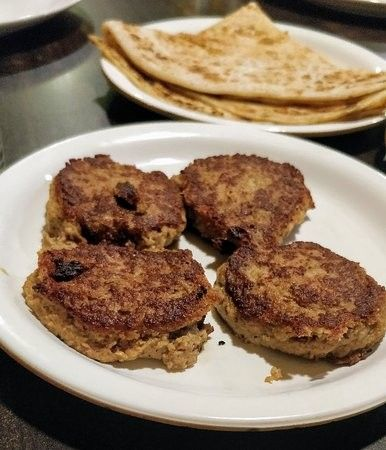
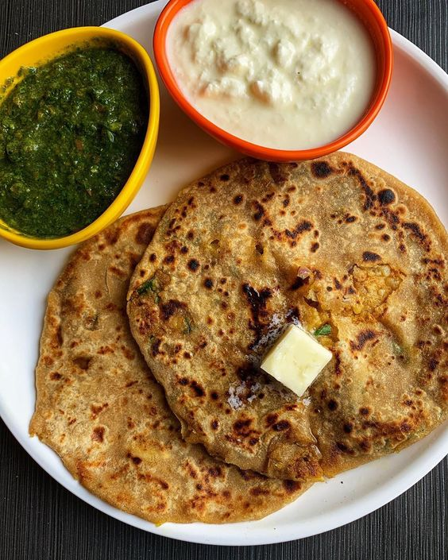
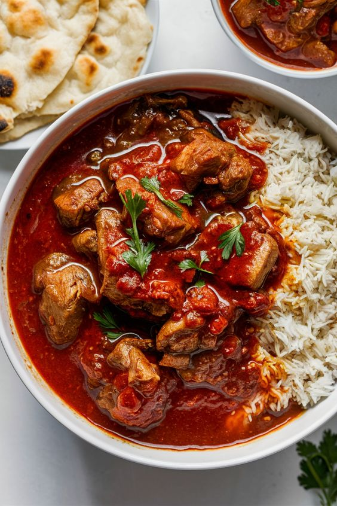

Famous Foods of Uttar Pradesh
Tunday Kababi

Tunday Kababi Recipe:
- Ingredients:
- 500g minced meat (buffalo or lamb)
- 1 onion, finely chopped
- 2 tablespoons ginger-garlic paste
- 1 teaspoon red chili powder
- 1 teaspoon cumin powder
- 1 teaspoon coriander powder
- 1/2 teaspoon garam masala
- 1 tablespoon chana dal (split chickpeas), soaked
- 1/4 cup chopped coriander leaves
- Salt to taste
- Oil for frying
- Instructions:
- Mix minced meat with chana dal, ginger-garlic paste, onion, and spices.
- Grind the mixture to a smooth paste. Adjust salt and spices to taste.
- Shape the mixture into small patties or skewers.
- Heat oil in a pan and fry the kababs until golden brown and cooked through.
- Serve hot with green chutney and onions.
Aloo Paratha

Aloo Paratha Recipe:
- Ingredients:
- 2 cups whole wheat flour
- 2 medium potatoes, boiled and mashed
- 1 onion, finely chopped
- 2 green chilies, chopped
- 1 teaspoon cumin seeds
- 1 teaspoon coriander powder
- 1/2 teaspoon garam masala
- 1 tablespoon chopped coriander leaves
- Salt to taste
- Oil or ghee for cooking
- Instructions:
- Mix whole wheat flour with water to form a dough. Let it rest for 20 minutes.
- Combine mashed potatoes with onions, green chilies, cumin seeds, coriander powder, garam masala, coriander leaves, and salt.
- Divide the dough into balls and roll each into a small circle. Place a portion of the potato filling in the center.
- Seal the dough around the filling and roll out into a paratha.
- Heat a tava or griddle and cook the paratha with oil or ghee until golden brown on both sides.
- Serve hot with yogurt or pickle.
Rogan Josh

Rogan Josh Recipe:
- Ingredients:
- 500g lamb, cut into pieces
- 2 onions, finely chopped
- 1 cup yogurt
- 2 tablespoons ginger-garlic paste
- 2 teaspoons red chili powder
- 1 teaspoon turmeric powder
- 1 teaspoon garam masala
- 1/2 teaspoon saffron (optional)
- 1/4 cup oil
- Salt to taste
- Instructions:
- Heat oil in a pan, add onions, and sauté until golden brown.
- Add ginger-garlic paste and cook for a few minutes.
- Add lamb pieces and brown them on all sides.
- Add red chili powder, turmeric powder, and salt. Mix well.
- Add yogurt and cook on low heat until the lamb is tender and the gravy is thick.
- Stir in garam masala and saffron (if using). Cook for a few more minutes.
- Serve hot with rice or naan.